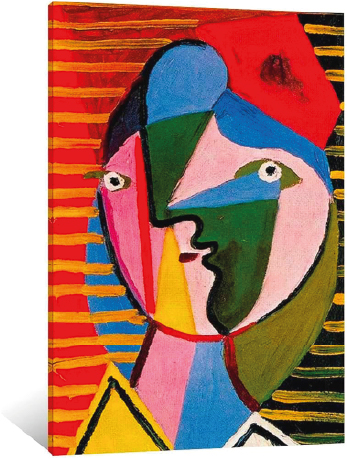
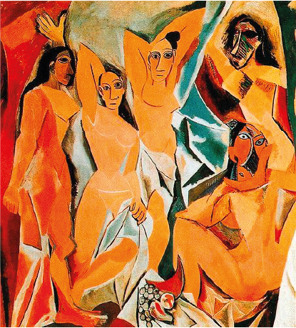
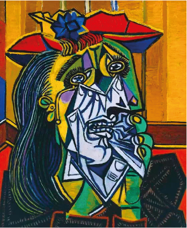

Pablo Picasso

Pablo Picasso (1881–1973) fue un pintor y escultor español, considerado uno de los artistas más influyentes del siglo XX. Nació en Málaga y desde joven mostró un talento excepcional para el dibujo. Vivió gran parte de su vida en Francia, donde desarrolló junto a Georges Braque el movimiento cubista, revolucionando la manera de representar la realidad. Su obra es inmensa y diversa: pasó por períodos como el Azul, el Rosa, el Cubismo, el Neoclasicismo y el Surrealismo, siempre innovando y desafiando las normas del arte tradicional.
Identidad mas alla de la apariencia
La pintura muestra el estilo cubista y expresionista de Picasso, donde la figura humana se descompone en formas geométricas y planos superpuestos. El rostro aparece difuminado y fragmentado, lo que transmite una sensación de anonimato y despersonalización, típica de la búsqueda cubista por mostrar múltiples perspectivas en una sola imagen. El fondo rojizo y las pinceladas enérgicas refuerzan la intensidad emocional de la obra, mientras que la simplificación de las formas convierte al retrato en una exploración más intelectual que realista.
A través de esta técnica, Picasso desafía la noción clásica de belleza y representación, proponiendo una visión más compleja y crítica de la identidad. La fragmentación del cuerpo y del rostro no solo responde a un interés formal, sino también a una reflexión sobre la condición humana en la modernidad. El espectador se ve obligado a reconstruir mentalmente la figura, participando activamente en el proceso de interpretación. De este modo, la obra se convierte en un lenguaje autónomo, donde la emoción y la razón dialogan en un equilibrio inestable que define la esencia del Cubismo.
El uso de planos superpuestos y la descomposición de la figura humana también reflejan la influencia de Paul Cézanne, quien buscaba reducir la naturaleza a formas geométricas básicas. Picasso retoma esa idea y la lleva más allá, creando un lenguaje visual que rompe con la perspectiva única del Renacimiento. En este retrato, la tensión entre la abstracción y la expresividad genera un efecto de extrañamiento: el espectador reconoce la figura, pero al mismo tiempo percibe su desintegración. Esta ambigüedad convierte la obra en un manifiesto estético, donde la representación deja de ser mera imitación y se transforma en una investigación sobre la percepción y la multiplicidad de la realidad.
Obras Destacadas


